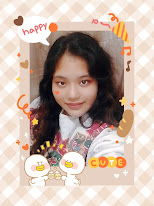
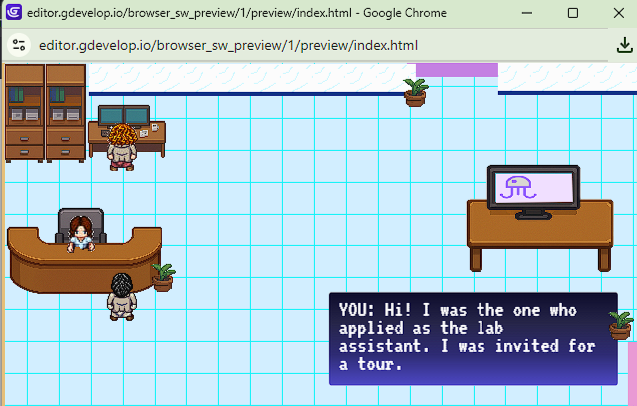

ABOUT ME

Hi! I'm a BA Multimedia Studies student with a passion for creativity, storytelling, and animal welfare. I enjoy exploring different forms of media, from games, photography, and sound to digital storytelling. I'm naturally curious and love understanding how things work, how people interact with technology, and how creative ideas can communicate meaningful messages.
THINGS I LOVE
- Watching dramas and discovering stories
- Dogs and animal welfare
- Comics, novels, and digital storytelling
- Exploring creative ideas and multimedia
- Anything pastel!
WHAT INSPIRES ME
I'm interested in how technology, media, and creativity shape people's experiences. I enjoy learning about digital communities, how people interact with platforms, and how multimedia can be used to inform, connect, and inspire.
PASSION PROJECTS
Jellatech - Top-Down Game
A top-down game development project where I explored interactive media, game design, and the process of turning creative ideas into an interactive experience.

2025
Other Projects
2D Rotoscope Animation
A 2D animation project using the rotoscope technique. Through this activity, I explored movement, visual storytelling, and the creative process of animation.
2026
WhatsApp Sticker Design
A creative project where I designed stickers for WhatsApp using the Sketch app. It allowed me to explore digital illustration, graphic design, and visual expression.
2020–Present